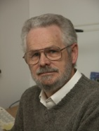

People & Contact
User feedback is crucial to this project. To provide feedback, please email us a the following address (please check the frequently asked questions beforehand if you require general assistance) . . .
bioaid-lab@googlegroups.comThis will ensure that your message is sent to all members of the BioAid team. We will soon establish a more formal data collection procedure.
| Nick Clark BioAid mobile and lab-scale app development. Algorithm development and engineering. |
|
 |
Wendy Lecluyse Evaluation of the aid with impaired listeners in a laboratory setting. This work has provided the parameter presets in the mobile app. Like Nick, Wendy is a visiting fellow here |
| Tim Jürgens Evaluation of the algorithm with machine listeners. This work has rigorously tested the algorithm code and will help to provide the next generation of parameters. |
|
|  | Ray Meddis Project Lead and original algorithm concept. |